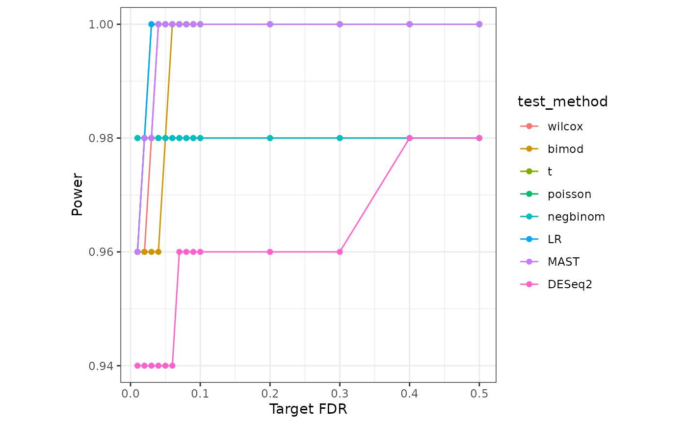
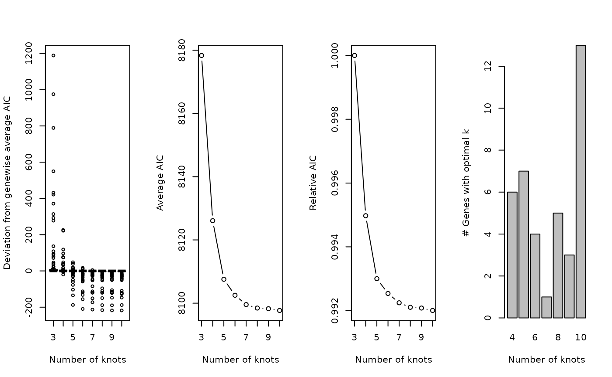
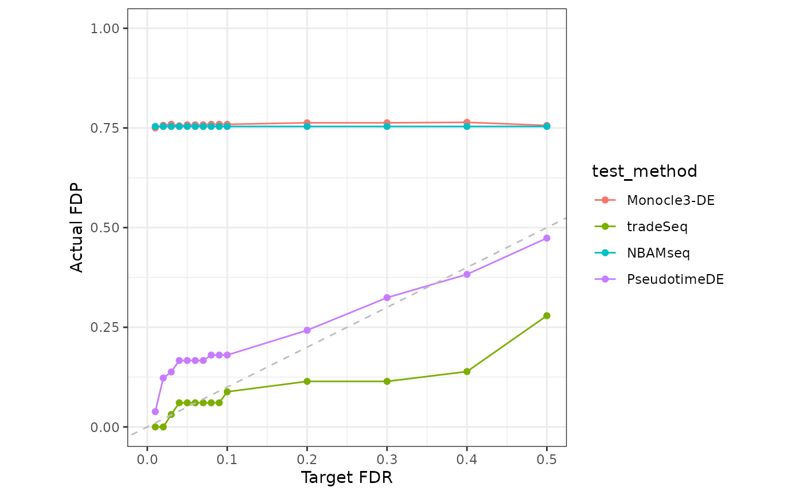
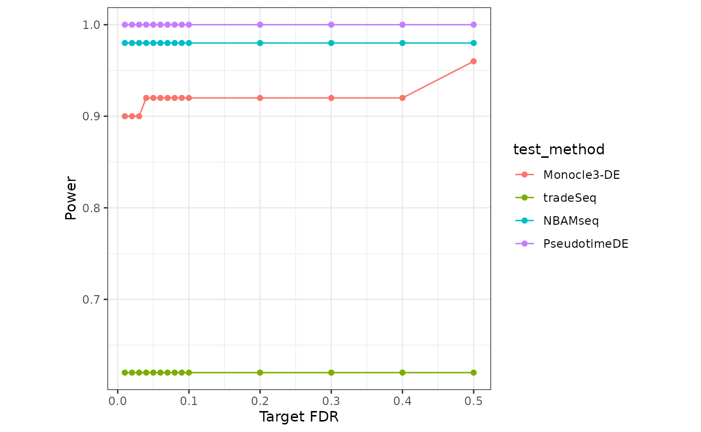
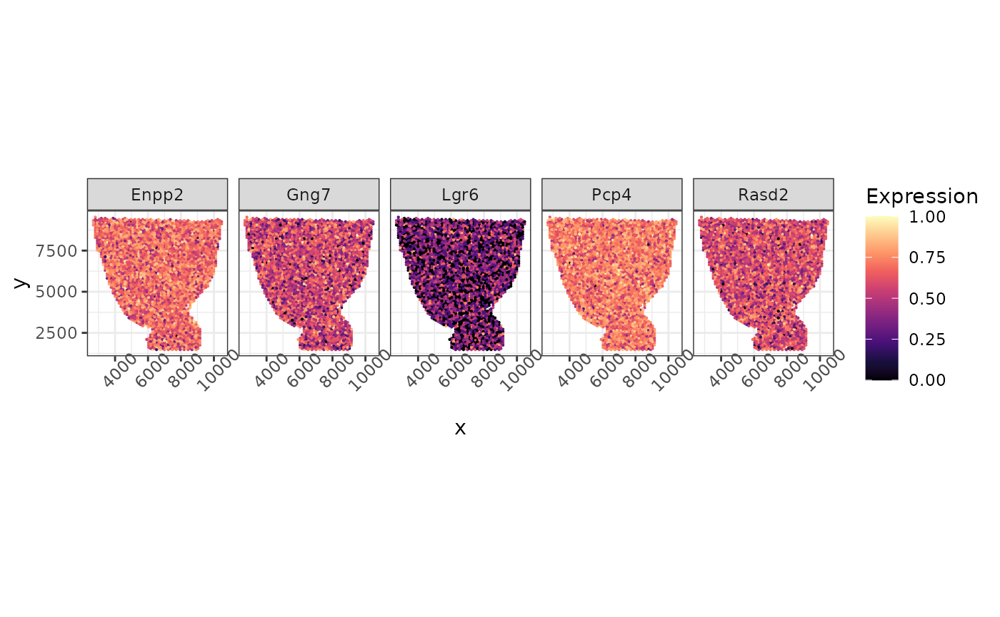

Benchmarking DE Analysis with scDesign3
Dongyuan Song
Bioinformatics IDP, University of California, Los Angelesdongyuansong@ucla.edu
Qingyang Wang
Department of Statistics, University of California, Los Angelesqw802@g.ucla.edu
17 January 2023
Source:../../scDesign3/code/vignettes/scDesign3-DEanalysis-vignette.Rmd
scDesign3-DEanalysis-vignette.Rmdlibrary(scDesign3)
library(SingleCellExperiment)
library(ggplot2)
library(DuoClustering2018)
library(Seurat)
library(SeuratObject)
library(scran)
library(parallel)
library(monocle3)
library(DESeq2)
library(BiocParallel)
library(NBAMSeq)
library(PseudotimeDE)
library(dplyr)
library(tradeSeq)
library(reshape2)
library(spatialDE)
library(SPARK)
library(scales)
library(tidyr)
theme_set(theme_bw())In this tutorial, we will demonstrate how to use scDesign3 to generate negative control and benchmark methods for identifying differentially expressed (DE) genes between discrete cell types or continuous trajectory from scRNA-seq data, and identifying spatially variable genes (SVG) from spatial transcriptomics data. Please note that here we only did a very brief benchmarking on a few methods for illustration purpose, not for formal comparison.
Identification of DE genes between discrete cell types
Read in the reference data
The raw data is from the R package DuoClustering2018 which contain a set of datasets with various clustering results.
The top 200 highly variable genes are kept for generating synthetic data.
ngene <- 200
logcounts(Zhengmix4eq_sce) <- log1p(counts(Zhengmix4eq_sce))
dec.seurat_obj <- modelGeneVar(Zhengmix4eq_sce)
chosen <- getTopHVGs(Zhengmix4eq_sce, n = ngene)
example_sce <- Zhengmix4eq_sce[chosen,]We extract out B cells and regulatory T cells only and use all cells from these two cell types to simulate synthetic data.
Simulation
We use the step-by-step functions instead of the one-shot function to generate synthetic data since these step-by-step functions allow us to alter estimated parameters and generate new data based on our desired parameters.
example_data <- construct_data(
sce = example_sce,
assay_use = "counts",
celltype = "cell_type",
pseudotime = NULL,
spatial = NULL,
other_covariates = NULL,
corr_by = "1"
)example_marginal <- fit_marginal(
data = example_data,
predictor = "gene",
mu_formula = "cell_type",
sigma_formula = "1",
family_use = "nb",
n_cores = 2,
usebam = FALSE
)example_copula <- fit_copula(
sce = example_sce,
assay_use = "counts",
marginal_list = example_marginal,
family_use = "nb",
copula = "gaussian",
n_cores = 2,
new_covariate = NULL,
input_data = example_data$dat
)example_para <- extract_para(
sce = example_sce,
marginal_list = example_marginal,
n_cores = 1,
family_use = "nb",
new_covariate = NULL
)Here, we examine the mean_mat, which is one of the outputs from the previous function extract_para(). For each gene, we calculate the difference in the between the maximum mean parameter and minimum mean parameter across all cells. We select genes which the gene’s mean difference across cells are in the top 50 largest differences. We regard these genes as DE genes. Then, we manually set the mean parameters of the rest genes to be the same across all cells. We regard all genes with the same mean parameter across cells as non-DE genes. Of course, this is a very flexible step and users may choose other ideas to modify the mean matrix.
diff <- apply(example_para$mean_mat, 2, function(x){max(x)-min(x)})
diff_ordered <- order(diff, decreasing = TRUE)
diff <- diff[diff_ordered]
num_de <- 50
de_idx <- names(diff[1:num_de])
non_de_idx <- names(diff[-(1:num_de)])
non_de_mat <- apply(example_para$mean_mat[,non_de_idx], 2, function(x){
avg <- (max(x)+min(x))/2
new_mean <- rep(avg, length(x))
return(new_mean)
})
example_para$mean_mat[,non_de_idx] <- non_de_mat example_newcount <- simu_new(
sce = example_sce,
mean_mat = example_para$mean_mat,
sigma_mat = example_para$sigma_mat,
zero_mat = example_para$zero_mat,
quantile_mat = NULL,
copula_list = example_copula$copula_list,
n_cores = 1,
family_use = "nb",
input_data = example_data$dat,
new_covariate = example_data$new_covariate,
important_feature = example_copula$important_feature
)DE Test
Then, we follow Seurat’s pipeline to preprocess the simulated data.
seurat_obj <- CreateSeuratObject(counts = example_newcount, project = "seurat_obj", min.cells = 0, min.features = 0)
seurat_obj[["percent.mt"]] <- PercentageFeatureSet(seurat_obj, pattern = "^MT-")
seurat_obj <- NormalizeData(seurat_obj, normalization.method = "LogNormalize", scale.factor = 10000)
seurat_obj <- FindVariableFeatures(seurat_obj, selection.method = "vst",nfeatures = 200)
all.genes <- rownames(seurat_obj)
seurat_obj <- ScaleData(seurat_obj, features = all.genes)
seurat_obj <- RunPCA(seurat_obj, features = VariableFeatures(object = seurat_obj))
seurat_obj <- JackStraw(seurat_obj, num.replicate = 100)
seurat_obj <- ScoreJackStraw(seurat_obj, dims = 1:20)Since we already have the ground truth cell type annotations for our simulated dataset, we can directly use the cell type annotations we have instead of running FindClusters from Seurat to avoid the double-dipping issue.
seurat_obj <- FindNeighbors(seurat_obj, dims = 1:10)
ct <- colData(example_sce)$cell_type
names(ct) <- colnames(example_sce)
seurat_obj[["cell_type"]] <- ct
Idents(seurat_obj) <- "cell_type"
seurat_obj <- RunUMAP(seurat_obj, dims = 1:10)Then, we follow Seurat’s tutorial to conduct DE test.
test <- c("wilcox", "bimod", "t", "poisson", "negbinom", "LR", "MAST", "DESeq2")
qvals <- matrix(0, nrow = dim(seurat_obj)[1], ncol = length(test))
for (x in 1:length(test)) {
markers <- FindMarkers(seurat_obj, ident.1 = "b.cells", ident.2 = "regulatory.t", test.use = test[x],
logfc.threshold = 0, min.pct = 0, min.cells.feature = 1, min.cells.group = 1)
qvals[,x] <- p.adjust(markers[rownames(seurat_obj),"p_val"], method = "BH", length(rownames(seurat_obj)))
}
colnames(qvals) <- test
rownames(qvals) <- rownames(seurat_obj)Since we manually created non-DE genes in the extra_para() step, now we can calculate the actual false discovery proportion(FDP) and power of the DE tests we conducted above with various target FDR threshold.
targetFDR <- c(seq(0.01,0.1,by=0.01),seq(0.2,0.5,by=0.1))
de <-de_idx
fdp_mat <- matrix(0, nrow = length(targetFDR), ncol = length(test))
colnames(fdp_mat) <- test
rownames(fdp_mat) <- targetFDR
power_mat <- matrix(0, nrow = length(targetFDR), ncol = length(test))
colnames(power_mat) <- test
rownames(power_mat) <- targetFDR
for (t in 1:length(test)) {
curr_p = qvals[,t]
for (i in 1:length(targetFDR)) {
thre <- targetFDR[i]
discovery <- which(curr_p <= thre)
tp <- length(intersect(names(discovery),de))
if(length(discovery) == 0){
fdp <- 0
}else{
fdp <- (length(discovery) - tp)/length(discovery)
}
power <- tp/length(de)
fdp_mat[i, t] <- fdp
power_mat[i,t] <- power
}
}Lastly, we visualize the Target FDR vs Actual FDP and Target FDR vs Power below.
fdp_long <- melt(fdp_mat)
colnames(fdp_long) <- c("Target FDR","test_method","Actual FDP")
fdp_plot <- ggplot(fdp_long) +
geom_line(aes(x=`Target FDR`, y=`Actual FDP`,color=test_method))+
geom_point(aes(x=`Target FDR`, y=`Actual FDP`,color=test_method))+
geom_abline(intercept = 0, slope=1,linetype="dashed",color="grey")+
theme(aspect.ratio = 1) + expand_limits(x = 0, y = c(0,1))
fdp_plot
power_long <- melt(power_mat)
colnames(power_long) <- c("Target FDR","test_method","Power")
power_plot <- ggplot(power_long) +
geom_line(aes(x=`Target FDR`, y=Power,color=test_method))+
geom_point(aes(x=`Target FDR`, y=Power,color=test_method))+
theme(aspect.ratio = 1)
power_plot
Identication of DE genes along a trajectory
Read in the reference data
The raw data is from the scvelo, which describes pancreatic endocrinogenesis. We pre-select the top 1000 highly variable genes and filter out some cell types to ensure a single trajectory.
example_sce <- readRDS((url("https://www.dropbox.com/s/p1mvl5osxp55sot/PANCREAS_sce.rds?raw=1")))
print(example_sce)
#> class: SingleCellExperiment
#> dim: 1000 2087
#> metadata(5): clusters_coarse_colors clusters_colors day_colors
#> neighbors pca
#> assays(6): X spliced ... cpm logcounts
#> rownames(1000): Pyy Iapp ... Eya2 Kif21a
#> rowData names(1): highly_variable_genes
#> colnames(2087): AAACCTGAGAGGGATA AAACCTGGTAAGTGGC ... TTTGTCAAGTGACATA
#> TTTGTCAAGTGTGGCA
#> colData names(7): clusters_coarse clusters ... sizeFactor pseudotime
#> reducedDimNames(4): X_pca X_umap PCA UMAP
#> mainExpName: NULL
#> altExpNames(0):To save computational time, we only use the top 200 genes.
Simulation
We use the step-by-step functions instead of the one-shot function to generate synthetic data since these step-by-step functions allow us to alter estimated parameters and generate new data based on our desired parameters.
PANCREAS_data <- construct_data(
sce = example_sce,
assay_use = "counts",
celltype = "cell_type",
pseudotime = "pseudotime",
spatial = NULL,
other_covariates = NULL,
corr_by = "1"
)PANCREAS_marginal <- fit_marginal(
data = PANCREAS_data,
predictor = "gene",
mu_formula = "s(pseudotime, k = 10, bs = 'cr')",
sigma_formula = "s(pseudotime, k = 5, bs = 'cr')",
family_use = "nb",
n_cores = 2,
usebam = FALSE
)PANCREAS_copula <- fit_copula(
sce = example_sce,
assay_use = "counts",
marginal_list = PANCREAS_marginal,
family_use = "nb",
copula = "gaussian",
n_cores = 2,
new_covariate = NULL,
input_data = PANCREAS_data$dat
)PANCREAS_para <- extract_para(
sce = example_sce,
marginal_list = PANCREAS_marginal,
n_cores = 1,
family_use = "nb",
new_covariate = NULL
)Here, we examine the mean_mat, which is one of the outputs from the previous function extract_para(). For each gene, we calculate the difference in the between the maximum mean parameter and minimum mean parameter across all cells. We select genes which the gene’s mean difference across cells are in the top 50 largest differences. We regard these genes as DE genes(DEG). Then, we manually set the mean parameters of the rest genes to be the same across all cells. We regard all genes with the same mean parameter across cells as non-DE genes.
diff <- apply(PANCREAS_para$mean_mat, 2, function(x){max(x)-min(x)})
diff_ordered <- order(diff, decreasing = TRUE)
diff <- diff[diff_ordered]
num_de <- 50
de_idx <- names(diff[1:num_de])
non_de_idx <- names(diff[-(1:num_de)])
non_de_mat <- apply(PANCREAS_para$mean_mat[,non_de_idx], 2, function(x){
avg <- mean(x)
new_mean <- rep(avg, length(x))
return(new_mean)
})
PANCREAS_para$mean_mat[,non_de_idx] <- non_de_matset.seed(123)
PANCREAS_newcount <- simu_new(
sce = example_sce,
mean_mat = PANCREAS_para$mean_mat,
sigma_mat = PANCREAS_para$sigma_mat,
zero_mat = PANCREAS_para$zero_mat,
quantile_mat = NULL,
copula_list = PANCREAS_copula$copula_list,
n_cores = 1,
family_use = "nb",
input_data = PANCREAS_data$dat,
new_covariate = PANCREAS_data$new_covariate,
important_feature = PANCREAS_copula$important_feature
)DE genes identification
Now, we use the simulated data to benchmark the performance of two DEG identification methods: Monocle3, tradeSeq, NBAMseq, and PseudotimeDE. The p-values from the two methods after Benjamini-Hochberg(BH) corretion will be stored in qvals in the following code.
qvals <- matrix(0, ncol = 4, nrow = dim(simu_sce)[1])
colnames(qvals) <- c("Monocle3-DE","tradeSeq","NBAMseq","PseudotimeDE")
rownames(qvals) <- rownames(simu_sce)Monocle3
We follow the tutorial from Monocle3 to conduct the DE test and obtain the p-values after BH correction.
rowdata <- rowData(simu_sce)
rowdata$gene_short_name <- rownames(rowData(simu_sce))
coldata <- colData(simu_sce)
cds <- new_cell_data_set(counts(simu_sce),
cell_metadata = coldata,
gene_metadata = rowdata)
gene_fits <- fit_models(cds, model_formula_str = "~pseudotime")
fit_coefs <- coefficient_table(gene_fits)
fit <- fit_coefs %>% dplyr::filter(term == "pseudotime") %>% dplyr::select(p_value, q_value) %>% dplyr::mutate(gene = rownames(simu_sce))
fit
qvals[fit$gene,"Monocle3-DE"] <- fit$q_valuetradeSeq
We follow the tutorial from tradeSeq to conduct the DE test and obtain the p-values after BH correction.
pseudo <- colData(simu_sce)$pseudotime
icMat <- evaluateK(counts = counts(simu_sce), pseudotime = pseudo, cellWeights = rep(1, dim(simu_sce)[2]), k = 3:10, nGenes = 100, verbose = FALSE, plot = TRUE)
res_tradeSeq <- fitGAM(counts = as.matrix(assays(simu_sce)$counts), pseudotime = pseudo, cellWeights = rep(1, length(pseudo)),nknots = 10)
assoRes <- associationTest(res_tradeSeq, lineages = FALSE)
assoRes <- assoRes %>% as_tibble(rownames = "gene") %>% dplyr::mutate(qvalue = p.adjust(pvalue, method = "BH"))
qvals[assoRes$gene,"tradeSeq"] <- assoRes$qvalueNBAMseq
We follow the tutorial from NBAMseq to conduct the DE test and obtain the p-values after BH correction.
PseudotimeDE
We follow the tutorial from PseudotimeDE to conduct the DE test and obtain the p-values after BH correction. Here to save computational time, we use the fix-mode of PseudotimeDE.
ori_tbl <- tibble(cell = colnames(simu_sce), pseudotime = colData(simu_sce)$pseudotime)
res <- runPseudotimeDE(gene.vec = rownames(simu_sce),
ori.tbl = ori_tbl,
sub.tbl = NULL,
mat = simu_sce,
model = "nb")
qvals[res$gene,"PseudotimeDE"] <- p.adjust(res$fix.pv, method = "BH", length(res$gene))Since tradeSeq’s result contains some NA, we convert the NA to 1 first.
Since we manually created non-DE genes in the extra_para() step, now we can calculate the actual false discovery proportion(FDP) and power of the DE tests we conducted above with various target FDR threshold.
test = colnames(qvals)
targetFDR <- c(seq(0.01,0.1,by=0.01),seq(0.2,0.5,by=0.1))
de <- colnames(PANCREAS_para$mean_mat[,de_idx])
fdp_mat <- matrix(0, nrow = length(targetFDR), ncol = length(test))
colnames(fdp_mat) <- test
rownames(fdp_mat) <- targetFDR
power_mat <- matrix(0, nrow = length(targetFDR), ncol = length(test))
colnames(power_mat) <- test
rownames(power_mat) <- targetFDR
for (t in 1:length(test)) {
curr_p = qvals[,t]
for (i in 1:length(targetFDR)) {
thre <- targetFDR[i]
discovery <- which(curr_p <= thre)
tp <- length(intersect(names(discovery),de))
if(length(discovery) == 0){
fdp <- 0
}else{
fdp <- (length(discovery) - tp)/length(discovery)
}
power <- tp/length(de)
fdp_mat[i, t] <- fdp
power_mat[i,t] <- power
}
}Lastly, we visualize the Target FDR vs Actual FDP and Target FDR vs Power below.
fdp_long <- melt(fdp_mat)
colnames(fdp_long) <- c("Target FDR","test_method","Actual FDP")
fdp_plot <- ggplot(fdp_long) +
geom_line(aes(x=`Target FDR`, y=`Actual FDP`,color=test_method))+
geom_point(aes(x=`Target FDR`, y=`Actual FDP`,color=test_method))+
geom_abline(intercept = 0, slope=1,linetype="dashed",color="grey")+
theme(aspect.ratio = 1) + expand_limits(x = 0, y = c(0,1))
fdp_plot
power_long <- melt(power_mat)
colnames(power_long) <- c("Target FDR","test_method","Power")
power_plot <- ggplot(power_long) +
geom_line(aes(x=`Target FDR`, y=Power,color=test_method))+
geom_point(aes(x=`Target FDR`, y=Power,color=test_method))+
theme(aspect.ratio = 1)
power_plot
Identication of Spatially Variable Genes (SVG) in spatial transcriptomic data
Read in the reference data
The raw data is from the Seurat, which is a dataset generated with the Visium technology from 10x Genomics. We pre-select the top spatial variable genes.
example_sce <- readRDS((url("https://www.dropbox.com/s/v1uazcl2glirmfe/VISIUM_sce.rds?raw=1")))
print(example_sce)
#> class: SingleCellExperiment
#> dim: 1000 2696
#> metadata(0):
#> assays(2): counts logcounts
#> rownames(1000): Calb2 Gng4 ... Fndc5 Gda
#> rowData names(0):
#> colnames(2696): AAACAAGTATCTCCCA-1 AAACACCAATAACTGC-1 ...
#> TTGTTTCACATCCAGG-1 TTGTTTCCATACAACT-1
#> colData names(12): orig.ident nCount_Spatial ... spatial2 cell_type
#> reducedDimNames(0):
#> mainExpName: NULL
#> altExpNames(0):To save time, we subset the top 200 genes.
We remove the mitochondrial genes since this is a prepreocessing step in SPARK-X, which is one of the method we will use to identify spatially varaible genes.
Simulation
We use the step-by-step functions instead of the one-shot function to generate synthetic data since these step-by-step functions allow us to alter estimated parameters and generate new data based on our desired parameters.
example_data <- construct_data(
sce = example_sce,
assay_use = "counts",
celltype = "cell_type",
pseudotime = NULL,
spatial = c("spatial1", "spatial2"),
other_covariates = NULL,
corr_by = "1"
)example_marginal <- fit_marginal(
data = example_data,
predictor = "gene",
mu_formula = "s(spatial1, spatial2, bs = 'gp', k= 50)",
sigma_formula = "1",
family_use = "nb",
n_cores = 2,
usebam = FALSE
)example_copula <- fit_copula(
sce = example_sce,
assay_use = "counts",
marginal_list = example_marginal,
family_use = "nb",
copula = "gaussian",
n_cores = 2,
new_covariate = NULL,
input_data = example_data$dat
)example_para <- extract_para(
sce = example_sce,
marginal_list = example_marginal,
n_cores = 2,
family_use = "nb",
new_covariate = NULL
)Here, we examine the mean_mat, which is one of the outputs from the previous function extract_para(). For each gene, we calculate the deviance explained by spatial locations in each regression model, and select the top 50. We regard these genes as spatially variable genes (SVGs). Then, we manually set the mean parameters of the rest genes to be the same across all cells. We regard all genes with the same mean parameter across cells as non-SVG genes.
dev_explain <- sapply(example_marginal, function(x){
sum = summary(x)
return(sum$dev.expl)
})
dev_ordered <- order(dev_explain, decreasing = TRUE)
num_de <- 50
ordered <- dev_explain[dev_ordered]
de_idx <- names(ordered)[1:num_de]
non_de_idx <- names(ordered)[-(1:num_de)]
non_de_mat <- apply(example_para$mean_mat[,non_de_idx], 2, function(x){
avg <- (max(x)+min(x))/2
new_mean <- rep(avg, length(x))
return(new_mean)
})
example_para$mean_mat[,non_de_idx] <- non_de_matAnother way to select SVG based on Moran’s I.
# num_de <- 50
# loc = colData(simu_sce)[,c("spatial1","spatial2")]
# features = FindSpatiallyVariableFeatures(counts(simu_sce), spatial.location = loc, selection.method = "moransi",nfeatures = num_de)
# top.features = features[order(features$p.value),]
# top.features= rownames(top.features[1:num_de,])
# de_idx <- which(rownames(simu_sce) %in% top.features)
# non_de_idx <-which(!rownames(simu_sce) %in% top.features)
# non_de_mat <- apply(example_para$mean_mat[,non_de_idx], 2, function(x){
# avg <- (max(x)+min(x))/2
# new_mean <- rep(avg, length(x))
# return(new_mean)
# })
# example_para$mean_mat[,non_de_idx] <- non_de_mat example_newcount <- simu_new(
sce = example_sce,
mean_mat = example_para$mean_mat,
sigma_mat = example_para$sigma_mat,
zero_mat = example_para$zero_mat,
quantile_mat = NULL,
copula_list = example_copula$copula_list,
n_cores = 1,
family_use = "nb",
input_data = example_data$dat,
new_covariate = example_data$new_covariate,
important_feature = rep(TRUE, dim(example_sce)[1])
)logcounts(example_sce) <- log1p(counts(example_sce))
simu_sce <- example_sce
counts(simu_sce) <- example_newcount
logcounts(simu_sce) <- log1p(counts(simu_sce))We rescale the log count of 5 synthetic SVG here to the 0 to 1 scale and visualize them below.
de_genes = de_idx[1:5]
loc = colData(simu_sce)[,c("spatial1","spatial2")]
expre = lapply(de_genes, function(x){
curr = as.matrix(counts(simu_sce)[x,])
curr = log1p(curr)
return(rescale(curr))
})
long = do.call(rbind, expre)
long = as.data.frame(long)
colnames(long) <- "Expression"
long$gene = do.call(c, lapply(de_genes, function(x){rep(x,dim(expre[[1]])[1])}))
long$x = rep(loc[,1],5)
long$y = rep(loc[,2],5)
as_tibble(long, rownames = "Cell") %>% ggplot(aes(x = x, y = y, color = Expression)) +geom_point(size = 0.1)+facet_grid(~gene)+ scale_colour_gradientn(colors = viridis_pal(option = "magma")(10), limits=c(0, 1)) + coord_fixed(ratio = 1) + theme(axis.text.x = element_text(angle = 45))We also rescale the log count of 5 synthetic non-SVG here to the 0 to 1 scale and visualize them below.
non_de_genes = non_de_idx[1:5]
loc = colData(simu_sce)[,c("spatial1","spatial2")]
expre = lapply(non_de_genes, function(x){
curr = as.matrix(counts(simu_sce)[x,])
curr = log1p(curr)
return(rescale(curr))
})
long = do.call(rbind, expre)
long = as.data.frame(long)
colnames(long) <- "Expression"
long$gene = do.call(c, lapply(non_de_genes, function(x){rep(x,dim(expre[[1]])[1])}))
long$x = rep(loc[,1],5)
long$y = rep(loc[,2],5)
as_tibble(long, rownames = "Cell") %>% ggplot(aes(x = x, y = y, color = Expression)) +geom_point(size = 0.1)+facet_grid(~gene)+ scale_colour_gradientn(colors = viridis_pal(option = "magma")(10), limits=c(0, 1)) + coord_fixed(ratio = 1) + theme(axis.text.x = element_text(angle = 45)) ### SVG identification Now, we use the simulated data to benchmark the performance of two SVG identification methods: spatialDE, SPARK, and SPARK-X. The p-values from the two methods after Benjamini-Hochberg(BH) corretion will be stored in qvals in the following code.
qvals <- matrix(0, ncol = 3, nrow = dim(simu_sce)[1])
colnames(qvals) <- c("spatialDE","SPARK","SPARK-X")
rownames(qvals) <- rownames(simu_sce)spatialDE
We follow the tutorial from spatialDE to conduct the hypothesis test and obtain the p-values after BH correction.
count <- counts(simu_sce)
sample_info <- colData(simu_sce)[, c("spatial1","spatial2")]
sample_info <- as.data.frame(sample_info)
colnames(sample_info) <- c("x","y")
count <- count[rowSums(count) >=3, ]
count <- count[, row.names(sample_info)]
sample_info$total_counts <- colSums(count)
X <- sample_info[,c("x","y")]
norm_expr <- stabilize(count)
resid_expr <- regress_out(norm_expr, sample_info = sample_info)
results_spatialDE <- spatialDE::run(resid_expr, coordinates = X)
rownames(results_spatialDE) <- results_spatialDE$g
qvals[,"spatialDE"] <- results_spatialDE[rownames(simu_sce),"qval"]SPARK
We then follow the tutorial from SPARK to conduct the hypothesis test and obtain the p-values after BH correction.
rawcount <- counts(simu_sce)
info <- as.data.frame(colData(simu_sce)[, c("spatial1","spatial2")])
colnames(info) <- c("x","y")
info$total_count <- apply(rawcount,2,sum)
rownames(info) <- colnames(rawcount)
spark <- CreateSPARKObject(counts=rawcount,
location=info[,1:2],
percentage = 0,
min_total_counts = 10)
spark@lib_size <- apply(spark@counts, 2, sum)
spark <- spark.vc(spark,
covariates = NULL,
lib_size = spark@lib_size,
num_core = 5,
verbose = F)
spark <- spark.test(spark,
check_positive = T,
verbose = F)
qvals[,"SPARK"] <- spark@res_mtest$adjusted_pvalueSPARK-X
We then follow the tutorial from SPARK-X to conduct the hypothesis test and obtain the p-values after BH correction.
sp_count <- counts(simu_sce)
info <- as.data.frame(colData(simu_sce)[, c("spatial1","spatial2")])
colnames(info) <- c("x","y")
info$total_count <- apply(sp_count ,2,sum)
rownames(info) <- colnames(sp_count )
location <- as.matrix(info)
mt_idx <- grep("mt-",rownames(sp_count))
if(length(mt_idx)!=0){
sp_count <- sp_count[-mt_idx,]
}
sparkX <- sparkx(sp_count,location,numCores=1,option="mixture")
head(sparkX$res_mtest)
qvals[,"SPARK-X"] <-sparkX$res_mtest$adjustedPvalSince we manually created non-SVG in the extra_para() step, now we can calculate the actual false discovery proportion(FDP) and power of the tests we conducted above with various target FDR threshold.
test = colnames(qvals)
targetFDR <- c(0.01,0.05,0.1,0.2,0.5)
de <- de_idx
fdp_mat <- matrix(0, nrow = length(targetFDR), ncol = length(test))
colnames(fdp_mat) <- test
rownames(fdp_mat) <- targetFDR
power_mat <- matrix(0, nrow = length(targetFDR), ncol = length(test))
colnames(power_mat) <- test
rownames(power_mat) <- targetFDR
for (t in 1:length(test)) {
curr_p <- qvals[,t]
curr_test <- test[t]
for (i in 1:length(targetFDR)) {
thre <- targetFDR[i]
if(curr_test == "spatialDE"){
de_results <- results_spatialDE[results_spatialDE$qval < thre, ]
ms_results <- model_search(
resid_expr,
coordinates = X,
de_results = de_results
)
discovery <- ms_results$g
tp <- length(intersect(ms_results$g,de))
}else{
discovery <- which(curr_p <= thre)
tp <- length(intersect(names(discovery),de))
}
if(length(discovery) == 0){
fdp <- 0
}else{
fdp <- (length(discovery) - tp)/length(discovery)
}
power <- tp/length(de)
fdp_mat[i, t] <- fdp
power_mat[i,t] <- power
}
}Lastly, we visualize the Target FDR vs Actual FDP and Target FDR vs Power below.
fdp_long <- melt(fdp_mat)
colnames(fdp_long) <- c("Target FDR","test_method","Actual FDP")
fdp_plot <- ggplot(fdp_long) +
geom_line(aes(x=`Target FDR`, y=`Actual FDP`,color=test_method))+
geom_point(aes(x=`Target FDR`, y=`Actual FDP`,color=test_method))+
geom_abline(intercept = 0, slope=1,linetype="dashed",color="grey")+
theme(aspect.ratio = 1) + expand_limits(x = 0, y = c(0,1))
fdp_plotpower_long <- melt(power_mat)
colnames(power_long) <- c("Target FDR","test_method","Power")
power_plot <- ggplot(power_long) +
geom_line(aes(x=`Target FDR`, y=Power,color=test_method))+
geom_point(aes(x=`Target FDR`, y=Power,color=test_method))+
theme(aspect.ratio = 1)
power_plot